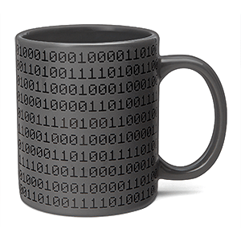
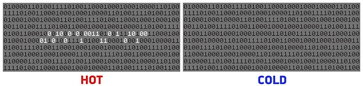

Hot Binary Heat Changing Mug "010010000100111101010100"
Description
Numbers make up everything in our digital world. They flow around us, invisible like the Force or the Matrix, controlling all our many computer-y devices. Two numbers, in particular: 0 and 1. Off and On. Well, we can tell you this: when there's no coffee in our cup, we're completely OFF our game. But when our mug is full of hot coffee, we're totally ON. And now, with the Hot Binary Heat Changing Mug, there's a mug that tells us which state our mug is in. In binary!
See, the Hot Binary Heat Changing Mug looks like just a dark mug with binary numbers all over it. That's its OFF or cold state. Add hot coffee (or any liquid) and a series of digits will turn white. Read them continuously from left to right, and you'll read: 010010000100111101010100. That's in binary. Of course, your Hot Binary Heat Changing Mug could just be paying you a compliment. Cheeky, mug.

Product Specifications
- Hot Binary Heat Changing Mug
- As you add hot liquids, the binary for "HOT" appears (read from left to right in one line, not two: 010010000100111101010100)
- A ThinkGeek creation and exclusive!
- Care Instructions: Hand wash only. Not microwave or dishwasher safe.
- Materials: Ceramic
- Dimensions: approx. 3.15" diameter x 3.75" tall
You wanna buy it?
If you like to buy this brilliant mug, just do the following steps:
- Select how many items do you want.
- Press "buy".